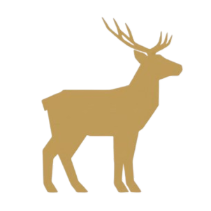

Strona główna Quiz świąteczny Przepisy Życzenia Kalendarz adwentowyOpis przepisu
Tradycyjne, ręcznie lepione uszka z farszem z leśnych grzybów i kapusty. Smak, bez którego nie ma Wigilii.
Klarowny, esencjonalny barszcz na domowym zakwasie. Podawany z uszkami pełnymi aromatycznego farszu.
Zupa grzybowa to tradycyjna, aromatyczna zupa przygotowywana z suszonych lub świeżych grzybów leśnych, najczęściej podawana na gęstej śmietanie lub bulionie, klasyka kuchni polskiej i danie wigilijne.
Pyszna, idealnie wysmażona ryba, która jest niezbędnym elementem polskiej kolacji wigilijnej
Przepyszna fasolka, idealna alternatywa dla uszek w barszczu, również idealnie komponuje się z rybą.
Kompot o charakterystycznym smaku i konsystencji, często spotykany na wigilii
Przepyszny kompot, pity po wigili
Każdemu dobrze znany klasyk polskiej kuchni. Prosta i pyszna.
Przepyszna sałatka z kurczakiem i innymi dodatkami, jak np. sałatka lub ogórek
Czekoladowe ciasto, z chrupiącą górą i puszystym środkiem
Klasyczne ciasto na wigilijnym stole
Zupa grzybowa to tradycyjna, aromatyczna zupa przygotowywana z suszonych lub świeżych grzybów leśnych, najczęściej podawana na gęstej śmietanie lub bulionie, klasyka kuchni polskiej i danie wigilijne.